본 포스트는 서울대학교 GSDS Sanghack Lee 교수님의 Causal Inference 강의 자료(Regression Discontinuity Design)를 바탕으로, 강의를 처음 듣는 독자도 논리적 흐름을 따라갈 수 있도록 재구성한 것입니다. 원 슬라이드는 Ed Rubin, Matthew Blackwell, Fan Li, Kosuke Imai 교수의 강의 자료를 차용하고 있으며, 읽기 자료로는 The Effect 와 The Mix Tape 가 함께 제시되었습니다.
한 줄 요약 (TL;DR)
“처치가 임계값 통과 여부로 결정될 때, 그 임계점 근방에서만은 관찰 연구가 실험에 가까워집니다.”
회귀 불연속 설계(RDD)는 지금까지 다룬 방법들과 전제부터 다릅니다. 백도어 조정이나 IPW는 모든 개체가 처치받을 수도, 받지 않을 수도 있어야 한다는 위치추정성(positivity) 위에서 작동하는데, RDD는 그 가정이 정의상 깨지는 설계입니다. 컷오프 아래에서는 처치 확률이 정확히 0, 위에서는 정확히 1이기 때문입니다.
대신 RDD는 훨씬 약해 보이는 가정 하나를 얻어 갑니다. 잠재 결과의 조건부 기댓값 함수가 임계값에서 연속이라면, 관측된 결과의 좌·우 극한 차이가 곧 임계점에서의 처치효과가 됩니다. 교란 변수를 관측할 필요도, 조정할 필요도 없습니다. 이 강의는 그 식별 논리에서 출발해 설계의 타당성을 검증하는 진단 도구(공변량 균형·McCrary 밀도 검정·플라세보 검정), 국소 선형 회귀와 데이터 기반 대역폭 선택, 순응이 불완전할 때의 Fuzzy RD, 그리고 실제 정책 평가 사례까지 이어집니다.
1. 개념과 식별 (Concept and Identification)
1.1 들어가며 (Introduction)
무작위 통제 실험(RCT)이 불가능한 관찰 연구 환경에서, 우리는 처치(treatment)가 무작위로 배정되지 않았다는 근본적인 어려움에 직면합니다. 그러나 현실의 많은 정책과 제도는 어떤 사전 변수가 특정 임계값(threshold)을 넘는지 여부에 따라 처치를 결정합니다. 시험 점수가 1500점을 넘으면 장학금을 받고, 가구 소득이 일정 기준 미만이면 재정 지원을 받는 식입니다.
이때 임계값 바로 위와 바로 아래에 있는 개체들은 거의 동일한 배경을 가지고 있음에도 불구하고 처치 여부만 달라집니다. 회귀 불연속 설계(Regression Discontinuity Design, RDD)는 바로 이 “임계점 근방에서의 국소적 무작위화” 직관을 활용하여 인과효과를 식별하는 준실험적(quasi-experimental) 방법론입니다.
지금까지의 흐름에 놓고 보면 위치가 분명해집니다.
- 백도어 조정(back-door adjustment): 교란 변수를 관측하고 조정해 비인과적 경로를 차단합니다.
- 도구변수(instrumental variables): 관측되지 않은 교란이 있을 때 외부 도구를 끌어옵니다.
- 오늘의 질문: 처치가 알려진 컷오프 규칙(known cutoff rule) 으로 결정된다면 어떻게 할 것인가?
1.2 실증 연구의 유형 (Types of Empirical Studies)
RDD가 어떤 자리에 놓이는지를 먼저 보겠습니다. 실증 연구는 연구자가 처치 배정에 얼마나 개입할 수 있는지에 따라 하나의 스펙트럼 위에 놓입니다.
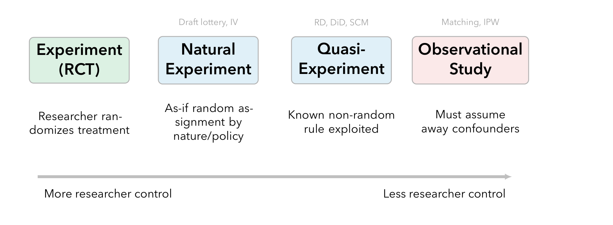
각 방법이 어디에서 식별에 필요한 변이를 끌어오는지를 정리하면 다음과 같습니다.
| 방법 | 설계 유형 | 핵심 변이의 원천 |
|---|---|---|
| 백도어 조정 / 매칭 / IPW | 관찰 연구 | 교란 변수를 조정 |
| IV (자연실험) | 자연실험 / 준실험 | 외생적 도구 |
| RDD | 준실험 | 컷오프 규칙 |
| DiD | 준실험 | 시간 변이, 집단 |
| SCM | 준실험 | 가중 도너 풀 |
- IV는 경계에 걸쳐 있습니다. 도구 자체가 자연실험(추첨)에서 올 수도, 준실험적 규칙(정책 임계값)에서 올 수도 있기 때문입니다.
- 이번 강의부터는 준실험적 설계, 즉 알려진 제도적·정책적 규칙을 식별에 이용하는 방법들을 다룹니다.
1.3 이 강의의 표기 (Notation for This Lecture)
이후 논의에서 반복적으로 쓰이는 기호를 먼저 정리합니다.
- \(Z_i \in \mathbb{R}\) — 강제 변수(forcing variable) 또는 러닝 변수(running variable). IV 강의의 도구변수와는 다른 대상입니다.
- \(c\) — 컷오프(cutoff), 즉 임계값
- \(X_i = \mathbf{1}\{Z_i \ge c\}\) — 처치 지시변수 (Sharp RD의 경우)
- \(Y_i(1), Y_i(0)\) — 잠재 결과(potential outcomes)
- \(\tau_{\mathrm{SRD}}\) — 컷오프에서의 Sharp RD 처치효과
- \(W_i = \mathbf{1}\{Z_i \ge c\}\) — Fuzzy RD에서의 도구변수. IV 강의에서 \(Z_i\)가 하던 역할을 여기서는 \(W_i\)가 맡습니다.
기호가 겹쳐 혼란스러울 수 있는 지점이 하나 있습니다. IV 강의에서 도구변수를 \(Z\)로 썼지만, RD에서는 \(Z\)가 러닝 변수이고 도구 역할은 \(W\)가 맡습니다. Fuzzy RD를 IV로 다시 읽을 때(§4.3) 이 대응 관계가 핵심이 됩니다.
1.4 그림으로 보는 RDD (Regression Discontinuity Design in a Figure)
RDD의 핵심 아이디어는 다음 한 문장으로 요약됩니다.
처치 배정을 결정하는 임의의 컷오프(cutpoint) \(c\) 를 찾되, 그 컷오프가 다음과 같이 처치를 결정하도록 합니다: \[ X_i = \mathbf{1}\{Z_i \ge c\} \]
여기서 \(Z_i\)는 강제 변수(forcing variable) 또는 러닝 변수(running variable) 라 불리는 연속적인 사전 처치 변수이며, \(X_i\)는 이진 처치 지시변수입니다.
대표 사례: 근소한 선거 (Close Elections)
이 아이디어를 가장 잘 보여주는 고전적 사례가 Lee et al. (2004, Q. J. Econ)의 “근소한 선거” 연구입니다.
- 러닝 변수 \(Z_i\): 시점 \(t\)에서의 민주당 득표율(Democratic Vote Share)
- 컷오프 \(c = 0.5\) (50%): 득표율이 50%를 넘으면 당선, 넘지 못하면 낙선
- 결과 \(Y_i\): 시점 \(t+1\) 에서의 ADA 점수 (의원의 진보 성향을 측정하는 지표)
50%를 아주 근소하게 넘긴 후보와 아주 근소하게 놓친 후보는 거의 동일한 정치적 환경에 놓여 있다고 볼 수 있습니다. 따라서 컷오프에서 결과 변수가 보이는 점프(jump) 의 크기 \(\gamma\)가 바로 “초기 당선이 미래 정치 성향에 미치는 인과효과”로 해석됩니다.
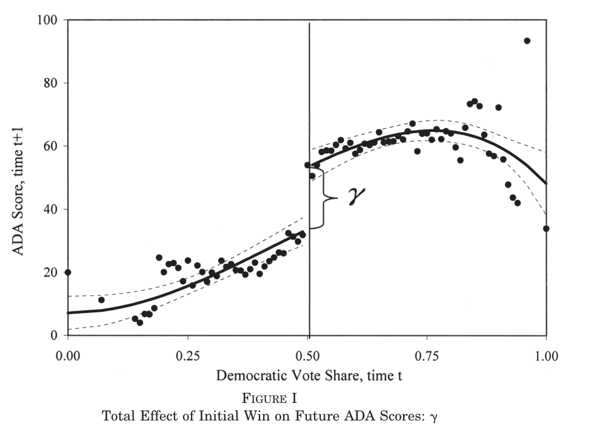
1.5 고전적 사례: 현직자 프리미엄 (Classic Example: Incumbency Advantage)
같은 선거 자료를 결과 변수만 바꾸어 분석한 것이 Lee (2008, J. Econometrics)의 현직자 프리미엄 연구이며, RDD 응용의 표준(gold standard) 으로 꼽힙니다.
- 질문: 선거에서 이기는 것이 다음 선거의 승리 확률을 인과적으로 높이는가?
- 러닝 변수: 선거 \(t\)에서의 민주당 득표율 마진
- 컷오프: 50% (승리 대 패배)
- 결과: 선거 \(t+1\) 에서의 민주당 득표율
논지의 핵심은 다음과 같습니다.
- 아슬아슬하게 이긴 후보와 아슬아슬하게 진 후보는 관측 가능한 특성뿐 아니라 관측 불가능한 특성에서도 비교 가능합니다. 컷오프 근방에서는 선거 결과가 사실상 무작위에 가깝기 때문입니다.
- 결과: 근소한 승리는 다음 선거 득표율을 약 6–8%p 높이며, 이는 상당한 크기의 현직자 프리미엄(incumbency advantage) 입니다.
1.6 회귀 불연속 설계란 (Regression Discontinuity Design, RDD)
RDD의 정의와 핵심 특성을 정리하면 다음과 같습니다.
- RDD는 준실험적 설계(quasi-experimental design) 입니다. 즉, 실험자가 처치를 무작위 배정한 것은 아니지만, 처치 배정 규칙이 알려져 있어 실험에 준하는 추론이 가능합니다.
- 이 설계에서 처치 상태는 강제 변수(forcing variable)에 따라 불연속적으로(discontinuously) 변합니다.
- 결정적으로, 처치는 컷오프에 의해 결정되지만, 관측되지 않은 교란 변수(unobserved confounders)는 컷오프 근방에서 매끄럽게(smoothly) 변합니다. 이것이 RDD가 작동하는 핵심 전제입니다.
- 따라서 RDD의 핵심(Key)은 처치 배정 메커니즘에 대한 지식(Knowledge of treatment assignment mechanism) 입니다.
기본 직관 (Basic Idea)
- 강제 변수의 값이 비슷하지만 처치 수준이 다른 개체들을 비교하면, 임계점에서의 처치 인과효과를 얻을 수 있습니다.
- 이 불연속성은 보통 사전 처치 변수에 대해 사전에 고정된, 인위적인 임계값(pre-fixed, artificial threshold) 에 의해 만들어집니다. 임계값 자체가 인위적이고 자의적이기 때문에, 그 근방에 있다는 것이 “운에 가까운” 상황으로 간주될 수 있는 것입니다.
1.7 예시 (Examples)
예시 1: 시험 점수 기반 장학금 (Thistlethwaite and Campbell, 1960)
- 학생의 자격 여부가 오로지 시험 점수가 임계값을 넘는지 여부에만 의존하는 교육 프로그램입니다.
- 임계값 바로 위의 학생과 바로 아래의 학생은 학습 능력, 태도 등 배경 측면에서 거의 비교 가능(comparable)하다고 볼 수 있습니다.
- 이 사례는 RDD의 가장 초기 적용 사례로 꼽힙니다.
예시 2: 가구 소득 기반 대학 재정 지원
- 학생의 지원 자격이 오로지 가구 소득이 임계값보다 높은지 낮은지에만 의존하는 경우입니다.
- 마찬가지로, 가구 소득이 임계값 바로 위인 학생과 바로 아래인 학생은 배경 측면에서 비교 가능합니다.
이 두 예시의 공통점은 자격 결정 규칙이 단일한 연속 변수의 임계값 통과 여부로 완전히 결정된다는 점입니다. 두 경우 모두 컷오프가 알려져 있고 사전에 결정되어 있으며, 컷오프 근방의 개체들이 그럴듯하게 비교 가능합니다.
1.10 관심 추정량 (Quantity of Interest)
Sharp RD에서 우리가 식별하고자 하는 것은 컷오프 \(c\)에서의 국소 평균 처치효과(local average treatment effect at the cutoff) 입니다.
\[ \tau_{SRD} = E[Y_i(1) - Y_i(0) \mid Z_i = c] = E[Y_i(1) \mid Z_i = c] - E[Y_i(0) \mid Z_i = c] \]
여기서 \(Y_i(1), Y_i(0)\)은 각각 처치/비처치 시의 잠재 결과(potential outcome)입니다.
근본적인 문제
- \(Z_i\)는 연속 변수이므로, 우리는 현실에서 정확히 \(Z_i = c\)인 개체를 거의 관측할 수 없습니다 (확률 0의 사건).
- 따라서 식별은 컷오프 \(c\) 주변에서의 외삽(extrapolation) 으로부터 나옵니다. 좌우에서 \(c\)로 다가가면서 결과 변수의 극한을 추정하는 것입니다.
- 그리고 이러한 외삽은 반드시 추가적인 가정(예: 매끄러움, smoothness) 을 필요로 합니다. 데이터만으로는 관측되지 않은 한 점에서의 효과를 알 수 없기 때문입니다.
1.11 가정 (Assumption)
핵심 가정: 잠재 결과 CEF의 연속성
RDD의 식별을 가능하게 하는 핵심 가정은 다음과 같습니다.
잠재 결과의 조건부 기댓값 함수(CEF, Conditional Expectation Function) 가 \(Z_i\)에 대해 연속입니다. 구체적으로, 다음 두 함수가 연속이라고 가정합니다.
\[ \mu_1(z) = E[Y_i(1) \mid Z_i = z], \qquad \mu_0(z) = E[Y_i(0) \mid Z_i = z] \]
이 연속성 가정은 직관적으로, “만약 처치가 없었다면(혹은 모두가 처치받았다면) 결과의 평균은 컷오프를 지나면서 매끄럽게 변했을 것”이라는 의미입니다. 즉, 컷오프에서 관측되는 결과의 점프는 오직 처치 때문이라는 것입니다.
식별을 위한 극한 전개
이 연속성으로부터 비처치 잠재 결과의 기댓값을 다음과 같이 단계별로 전개할 수 있습니다.
\[ \begin{aligned} E[Y_i(0) \mid Z_i = c] &= \lim_{z \uparrow c} E[Y_i(0) \mid Z_i = z] && \text{(연속성, continuity)} \\ &= \lim_{z \uparrow c} E[Y_i(0) \mid X_i = 0, Z_i = z] && \text{(SRD)} \\ &= \lim_{z \uparrow c} E[Y_i \mid Z_i = z] && \text{(일치성/SRD, consistency)} \end{aligned} \]
각 단계를 풀어 설명하면 다음과 같습니다.
- 첫 번째 등호 (연속성): \(\mu_0(z)\)가 연속이므로, \(z=c\)에서의 값은 좌극한(\(z \uparrow c\))과 같습니다. 우리는 \(c\) 바로 아래쪽 데이터로 이 극한에 접근합니다.
- 두 번째 등호 (SRD): Sharp RD 규칙상 \(z < c\) 영역에서는 모든 개체가 \(X_i = 0\)입니다. 따라서 \(X_i = 0\) 이라는 조건을 추가로 붙여도 조건부 기댓값은 변하지 않습니다.
- 세 번째 등호 (일치성): 일치성 가정 \(Y_i = Y_i(X_i)\)에 의해, \(X_i = 0\)인 개체에서는 관측된 결과 \(Y_i\)가 곧 \(Y_i(0)\)입니다. 따라서 \(Y_i(0)\)을 관측 가능한 \(Y_i\)로 대체할 수 있습니다.
처치 그룹에 대해서도 동일한 논리(단, 우극한 \(z \downarrow c\))가 적용됩니다.
\[ E[Y_i(1) \mid Z_i = c] = \lim_{z \downarrow c} E[Y_i \mid Z_i = z] \]
1.12 식별 결과 (Identification Results)
위의 두 결과를 결합하면, 일치성 + SRD 가정 + 연속성 으로부터 다음의 식별 공식을 얻습니다.
\[ \tau_{SRD} = \lim_{z \downarrow c} E[Y_i \mid Z_i = z] - \lim_{z \uparrow c} E[Y_i \mid Z_i = z] \]
즉, \(\tau_{SRD}\)는 컷오프에서 관측 결과 변수의 우극한과 좌극한의 차이, 다시 말해 회귀 함수가 컷오프에서 보이는 점프의 크기입니다.
추정상의 난점
- 문제는 두 회귀 함수를 각각 한 점(\(c\))에서 추정해야 한다는 것입니다.
- 모수적 가정(parametric assumptions) 없이는 매우 어렵습니다. 한 점에서의 조건부 기댓값을 추정해야 하기 때문입니다.
- 비모수 회귀(nonparametric regression) 는 일치 추정량(consistent)이 될 수 있지만, 수렴 속도가 느립니다(slow convergence).
무엇이 잘못될 수 있는가 (What can go wrong?)
- 임계값 주변에서의 분류(Sorting around the threshold): 이는 매끄러움 가정을 위반할 수 있는 대표적 위협입니다.
- 예: 재정 지원 임계값을 통과하기 위해 시험을 재응시하는 학생들.
- 더 나아가, 돈이 많은 학생일수록 시험을 더 많이 재응시할 수 있고(more money → more retaking), 이것이 임계값 주변에서의 조직적 분류(sorting)를 야기합니다. 이렇게 되면 컷오프 양쪽의 개체가 더 이상 비교 가능하지 않게 되어 RDD의 핵심 가정이 깨집니다.
2. 타당성과 진단 (Validity and Diagnostics)
식별 공식이 있다고 해서 설계가 유효한 것은 아닙니다. 연속성 가정은 검증 불가능한(untestable) 가정이지만, 그것이 깨졌을 때 나타나는 징후는 데이터에서 관찰할 수 있습니다. 이 절은 그 징후를 찾는 진단 도구들을 다룹니다.
2.1 그래프 분석 (Graphical / Plots Analysis)
대부분의 RD 분석은 다음 세 종류 그림의 일부 또는 전부를 포함합니다. 이 그림들은 RDD 가정의 타당성을 시각적으로 점검하는 진단 도구입니다.
1. 러닝 변수에 따른 결과 변수 (Outcomes by the running variable)
- 핵심 질문: 불연속점을 가로질러 처치효과가 관측되는가?
- 컷오프에서 결과 변수의 점프가 보인다면, 이는 처치효과의 존재를 시사합니다.
2. 러닝 변수에 따른 공변량 (Covariates by the running variable)
- 핵심 질문: 공변량이 불연속점을 가로질러 매끄럽고 균형(balanced)을 이루는가?
- 공변량의 평균에서 불연속이 발견되면 문제(problematic) 입니다. 이는 잠재 결과 평균에도 불연속이 있을 수 있다는 징후일 수 있습니다. 공변량은 처치 이전에 결정되므로 컷오프에서 점프해서는 안 됩니다.
3. 러닝 변수의 밀도 (Density of running variable)
- 핵심 질문: 처치를 받기 위해 임계값을 가로지르는 분류(sorting)의 증거가 있는가?
- McCrary test: 러닝 변수의 밀도(density)를 도시(plot)합니다.
- 컷오프 양쪽에서 밀도를 따로 추정하여, 밀도에 불연속이 있으면 분류(sorting)의 신호일 수 있습니다.
결과 변수 그림에서 효과가 시각적으로 명백하지 않다면, 그 RDD는 설득하기 어렵습니다. (Imbens & Lemieux, 2008)
RDD의 강점은 식별 논리가 그림 한 장으로 전달된다는 데 있습니다. 정교한 추정 절차를 거쳐야만 겨우 유의해지는 점프라면, 그것은 설계가 아니라 모형이 만들어 낸 결과일 가능성을 의심해야 합니다.
2.2 공변량 균형 검정 (Covariates by Running Variable)
Q: 공변량이 \(c\)를 가로질러 매끄러운가? 그렇지 않다면 RD가 유효하지 않을 수 있습니다.
공변량이 컷오프에서 매끄럽게 변한다면, 이는 컷오프 양쪽 개체들이 처치 외의 측면에서 비교 가능하다는 간접 증거가 됩니다. 반대로 공변량이 점프한다면 사실상의 무작위화가 깨진 것입니다.
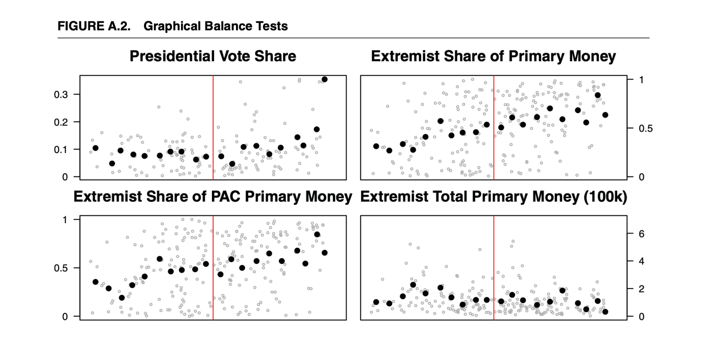
2.3 러닝 변수의 밀도 검정 (Density of Running Variable)
Q: 밀도가 \(c\)를 가로질러 매끄러운가? 그렇지 않다면 RD가 유효하지 않을 수 있습니다.
만약 개체들이 처치를 받기 위해 의도적으로 임계값을 넘으려 한다면, 임계값 바로 위쪽에 관측치가 과도하게 몰리고 바로 아래쪽은 비게 됩니다. 이것이 밀도의 불연속으로 나타납니다.
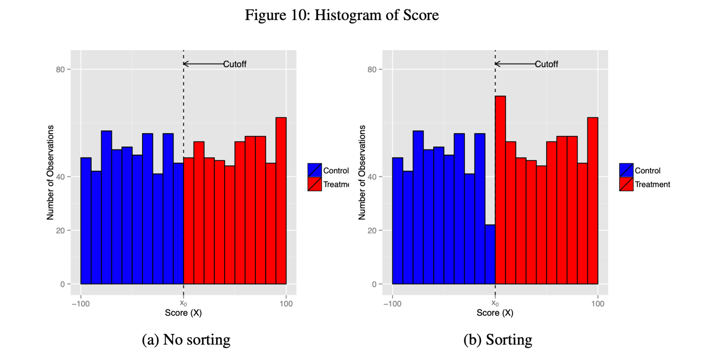
2.4 조작과 McCrary 검정 (Manipulation and the McCrary Test)
밀도 검정이 왜 결정적인지를 조금 더 정확히 정리해 두겠습니다.
- 분류(Sorting): RDD는 개체가 강제 변수 \(Z_i\)를 완벽하게 조작하여 컷오프의 한쪽에 조직적으로 머무를 수 없다고 가정합니다.
- 조작이 일어난다면(예: 처치를 받기 위해 \(Z_i\)를 스스로 선택하는 경우), 잠재 결과의 매끄러움이 깨질 가능성이 높습니다.
- McCrary (2008) 밀도 검정:
- 컷오프 \(c\)에서 밀도 \(f_Z(z)\)의 불연속을 검정합니다.
- 밀도에 유의한 “점프”가 있다면 조작/분류를 시사합니다.
조작이 발견되면, 컷오프 바로 위와 아래의 개체가 더 이상 비교 가능하지 않으므로 RD 설계 자체가 무효(invalid) 가 될 가능성이 큽니다. 이 경우 대역폭을 줄이거나 추정량을 바꾸는 식의 대응으로는 문제를 해결할 수 없습니다. 깨진 것은 추정이 아니라 식별이기 때문입니다.
2.5 번칭 (Bunching)
행정 데이터(administrative data)의 사용이 늘면서, 개인이나 기업이 주요 정책 임계값에 몰려드는(locate at key policy thresholds) 현상이 흔히 관찰됩니다. 이를 번칭(bunching) 이라 부릅니다.
대표적 예시는 다음과 같습니다.
- 세금이나 비용이 큰 규제가 발동되는 임계값 바로 아래로 이익을 보고하는 기업들 (예: 매출을 임계값 직전까지만 신고).
- 정규직(full-time)으로 분류되는 임계값 바로 아래까지만 근로 시간을 조정하는 개인들.
번칭은 곧 임계값 주변에서의 조직적 분류(sorting)를 의미하며, RDD의 매끄러움 가정에 대한 직접적인 위협이 됩니다.
번칭 사례: 보고된 부의 분포 (Distribution of Reported Wealth)
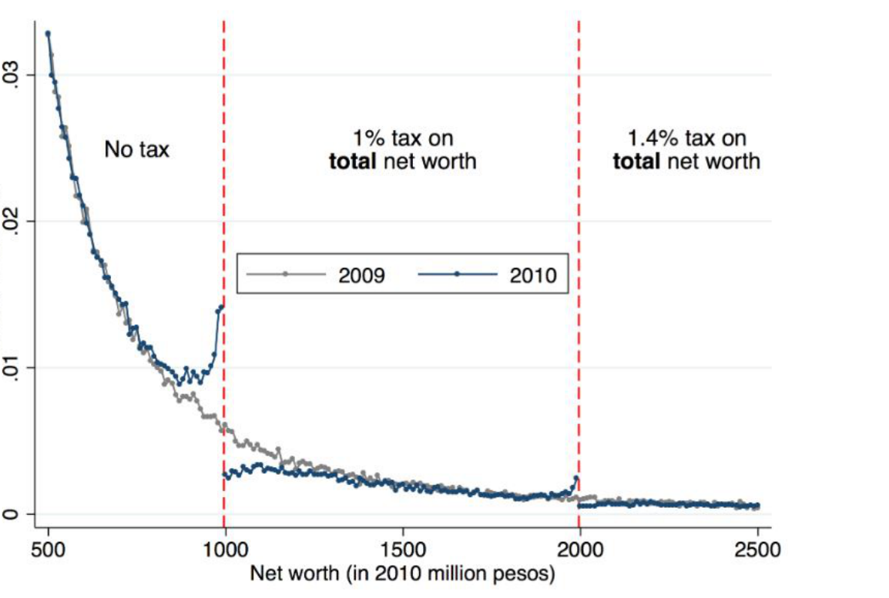
2.6 반증(플라세보) 검정 (Falsification / Placebo Tests)
분류와 조작을 직접 겨냥하는 진단이 밀도 검정이라면, 설계 전반의 신뢰성을 간접적으로 점검하는 방법이 플라세보 검정입니다. 논리는 단순합니다. RDD가 유효하다면 효과는 오직 진짜 컷오프에서만 나타나야 합니다.
- 플라세보 컷오프 검정(Placebo cutoff test): 진짜 컷오프 \(c\)에서 떨어진 가짜 컷오프에서 RD 효과를 다시 추정합니다.
- 아이디어: CEF가 정말로 매끄럽다면, 컷오프가 아닌 지점에서는 어떤 “점프”도 나타나지 않아야 합니다.
- 가짜 컷오프에서 유의한 “효과”가 발견되면 문제 신호입니다.
- 플라세보 결과 검정(Placebo outcome test): 사전 처치 공변량을 “결과 변수”인 것처럼 놓고 RD를 추정합니다.
- 아이디어: 처치 이전에 결정된 변수는 처치의 영향을 받을 수 없습니다.
- 공변량이 \(c\)에서 점프한다면 분류(sorting)의 가능성을 시사합니다. §2.2의 공변량 균형 검정을 회귀 형태로 옮긴 것이라 볼 수 있습니다.
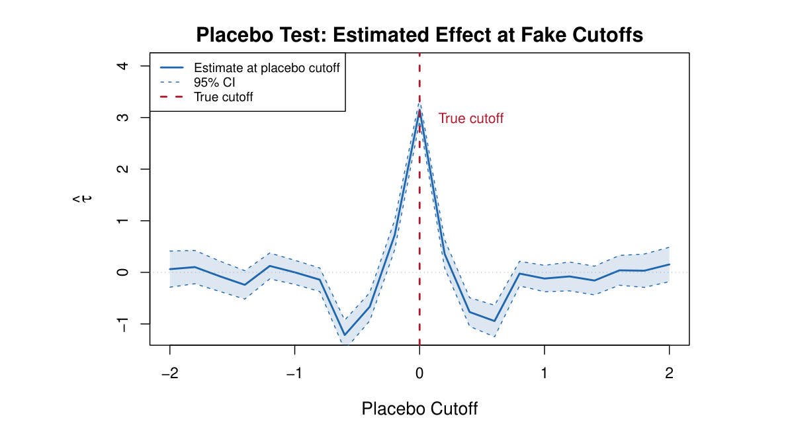
3. 추정 (Estimation)
3.1 대역폭 변화에 따른 국소 선형 회귀 (Local Linear Regression: 시각적 직관)
추정 이론에 들어가기 전에, 이 절 전체가 무엇을 놓고 씨름하는지를 그림으로 먼저 보겠습니다. 다음 일련의 그림들은 동일한 데이터에 대해 대역폭 \(h\)를 줄여가며 국소 선형 회귀를 적합한 결과입니다. 좌측(빨강)은 통제, 우측(파랑)은 처치 그룹의 적합선이며, 컷오프는 \(x=0\)입니다.
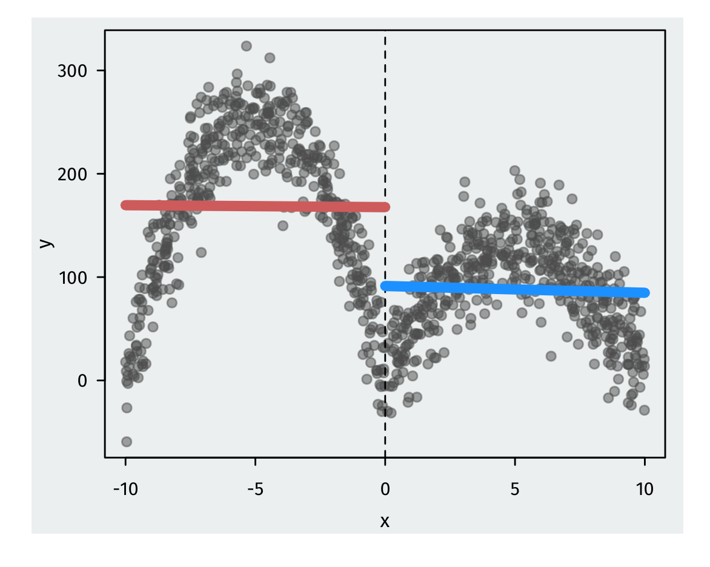
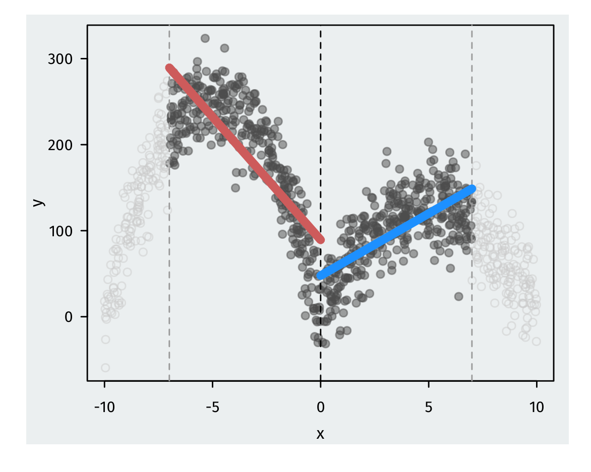
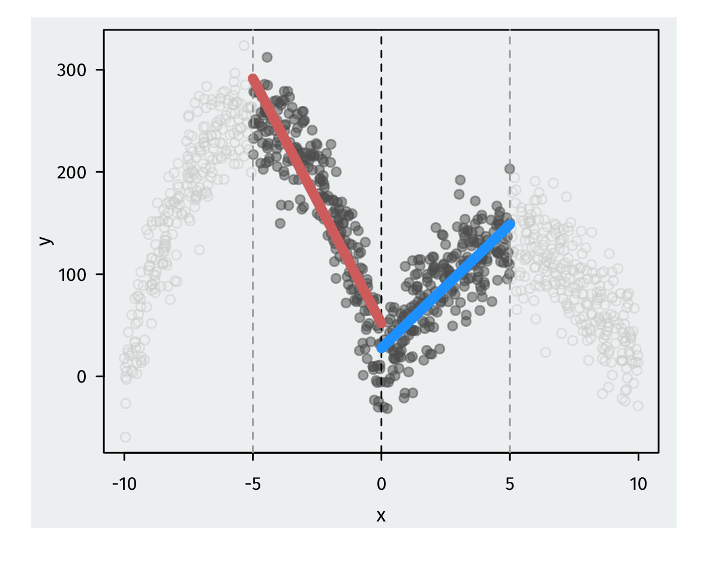
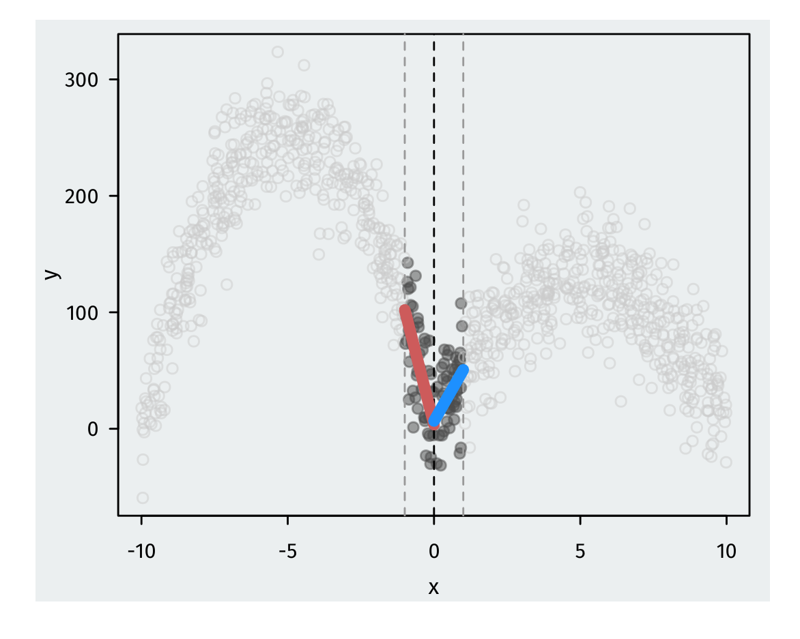
이 네 그림은 곧 대역폭 선택이 RDD 추정의 질을 좌우하는 핵심 결정임을 시각적으로 웅변합니다. 이 절의 나머지는 이 그림을 수식으로 옮기고, 마지막에는 \(h\)를 데이터가 스스로 고르게 만드는 방법을 다룹니다.
3.2 일반적 추정 전략 (General Estimation Strategy)
RDD의 주된 목표는 다음과 같은 여러 CEF의 극한(limit) 을 추정하는 것입니다.
\[ \lim_{z \uparrow c} E[Y_i \mid Z_i = z] \]
이 추정 문제는 표준적인 비모수 회귀와 두 가지 측면에서 다릅니다.
- 경계점에서의 추정: 우리는 회귀 함수를 단 하나의 점, 그것도 데이터 범위의 경계점(boundary point)에서 추정하려 합니다. 이는 내부 점(interior point) 추정보다 본질적으로 더 어렵습니다.
- 느린 편향 수축: 경계점에서 비모수 추정의 편향(bias)은 매우 느리게 줄어듭니다. 경계점에서는 한쪽 방향의 데이터만 사용할 수 있기 때문입니다(only getting data from one side of the boundary).
단순 접근의 한계
- 순진한 접근(Naive approach): 단순히 컷오프 위쪽 평균과 아래쪽 평균의 차이(difference in means)를 계산하는 것입니다.
- 문제점: 이 방법은 경계로부터 너무 멀리 떨어진 데이터까지 사용합니다. 컷오프에서 멀리 떨어진 개체들은 비교 가능하지 않으므로, 이는 편향된 추정을 낳습니다.
3.3 추정 (Estimation)
상한·하한 극한 함수
컷오프 양쪽의 극한 함수를 다음과 같이 정의합니다.
\[ \mu^{+}(c) = \lim_{z \downarrow c} E[Y_i \mid Z_i = z], \qquad \mu^{-}(c) = \lim_{z \uparrow c} E[Y_i \mid Z_i = z] \]
Sharp RD의 관심 추정량은 이 두 극한 함수의 컷오프에서의 차이입니다.
\[ \tau_{SRD} = \mu^{+}(c) - \mu^{-}(c) \]
균등 커널을 이용한 커널 회귀 (Kernel Regression with Uniform Kernel)
커널 회귀(kernel regression) 는 관측치에 컷오프까지의 근접도에 따라 가중치를 부여합니다. 대역폭 \(h\) 안에서 동일한 가중치를 주는 균등 커널을 쓰면, 하한 극한 \(\mu^{-}(c)\)의 추정량은 컷오프 바로 아래 구간의 단순 평균으로 주어집니다.
\[ \hat{\mu}^{-}(c) = \frac{\sum_{i=1}^{N} Y_i \cdot \mathbf{1}\{c - h \le Z_i < c\}}{\sum_{i=1}^{N} \mathbf{1}\{c - h \le Z_i < c\}} \]
- 여기서 \(h\)는 대역폭(bandwidth) 파라미터로, 곧 자세히 다룹니다.
- 직관적으로 이 식은 임계값으로부터 \(h\) 이내에 있는 개체들(즉 \([c-h, c)\) 구간)의 결과 변수 평균을 의미합니다. 분자는 해당 구간 개체들의 \(Y_i\) 합, 분모는 그 개체 수입니다.
3.4 (디그레션) 커널 (Digression: Kernel)
위 균등 커널 추정은 사실 컷오프 양쪽에서 국소 가중 회귀(locally weighted regression) 를 수행하는 일반적 틀의 특수한 경우입니다. 컷오프 위·아래에서 각각 다음과 같은 가중 최소제곱 문제를 풉니다.
\[ (\hat{\alpha}^{+}, \hat{\beta}^{+}) = \arg\min_{\alpha, \beta} \sum_{i=1}^{n} \mathbf{1}\{Z_i > c\} \, \{Y_i - \alpha - \beta(Z_i - c)\}^2 \cdot K\!\left(\frac{Z_i - c}{h}\right) \]
\[ (\hat{\alpha}^{-}, \hat{\beta}^{-}) = \arg\min_{\alpha, \beta} \sum_{i=1}^{n} \mathbf{1}\{Z_i < c\} \, \{Y_i - \alpha - \beta(Z_i - c)\}^2 \cdot K\!\left(\frac{Z_i - c}{h}\right) \]
여기서 \(K(\cdot)\)는 커널 함수로, 컷오프에 가까운 점에 더 큰 가중치를 부여합니다.
두 가지 대표적 커널
균등 커널(uniform kernel): \[ K(u) = \frac{1}{2} \mathbf{1}\{|u| < 1\} \] 대역폭 내의 모든 점에 동일한 가중치를 줍니다. 곧 단순 평균/단순 OLS에 해당합니다.
삼각 커널(triangular kernel): \[ K(u) = (1 - |u|) \cdot \mathbf{1}\{|u| < 1\} \] \(u = 0\)(컷오프)에서 가장 큰 가중치를 주고, \(|u|\)가 1에 가까워질수록 가중치가 선형적으로 0까지 감소합니다. 컷오프에 가까운 점을 더 강조하므로 경계 추정에 유리합니다.
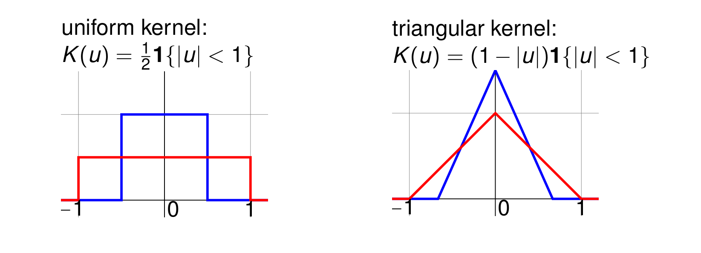
3.5 국소 평균 (Local Averages)
가장 기본적인 추정 방식은 컷오프 좌우의 국소 평균을 구하는 것입니다.
- \(Z_i \in [c, c+h]\) 구간에서 \(Y_i\)의 평균, 그리고 \(Z_i \in [c-h, c)\) 구간에서 \(Y_i\)의 평균을 추정합니다.
- 이는 컷오프로부터 \(h\) 이내에 있는 개체들에 대한 다음 회귀로도 볼 수 있습니다.
\[ (\hat{\alpha}, \hat{\tau}_{SRD}) = \arg\min_{\alpha, \tau} \sum_{i: Z_i \in [c-h, c+h]} (Y_i - \alpha - \tau X_i)^2 \]
- 이 회귀에서 \(\hat{\alpha}\)는 통제 그룹의 평균, \(\hat{\alpha} + \hat{\tau}\)는 처치 그룹의 평균이 되며, 따라서 \(\hat{\tau}_{SRD} = \hat{\tau}\)가 두 평균의 차이를 나타냅니다. \(X_i\)가 이진이므로 OLS 계수가 정확히 평균 차이와 일치합니다.
- 즉, 결과 변수에 대한 예측이 컷오프 양쪽에서 각각 국소적으로 상수(locally constant) 라고 가정하는 셈입니다.
대역폭 \(h\)의 편향-분산 트레이드오프
\(h\)는 편향-분산 트레이드오프(bias-variance tradeoff) 를 조절하는 튜닝 파라미터입니다.
- 높은 \(h\) (넓은 창): 데이터 포인트가 많아 분산은 낮지만, 컷오프에서 먼 점까지 포함하므로 편향이 큽니다(high bias, low variance).
- 낮은 \(h\) (좁은 창): 컷오프에 가까운 점만 사용해 편향은 낮지만, 데이터가 적어 분산이 큽니다(low bias, high variance).
- 다만 편향은 \(h\)가 줄어듦에 따라 천천히 줄어듭니다. 그 결과 유한 표본에서 큰 편향(large finite sample bias)이 남을 가능성이 높습니다. 이 점이 단순 국소 평균(국소 상수) 추정의 약점입니다.
3.6 국소 선형 회귀 (Local Linear Regression, LLR)
국소 상수의 편향 문제를 완화하기 위해, 컷오프 좌우에서 선형 회귀를 적합합니다. 대역폭이 넓어지면 CEF가 평평하지 않을 수 있으므로, 기울기를 허용해 편향을 줄이는 것입니다.
\(Z_i \in [c-h, c)\) 그룹에 대해 \(Y_i\)를 \(Z_i - c\)에 회귀합니다.
\[ (\hat{\alpha}^{-}, \hat{\beta}^{-}) = \arg\min_{\alpha, \beta} \sum_{i: Z_i \in [c-h, c)} (Y_i - \alpha - \beta(Z_i - c))^2 \]
(처치 그룹 \(Z_i \in [c, c+h]\)에 대해서도 동일한 회귀를 별도로 수행합니다.)
추정량의 단순화
회귀를 \(Z_i - c\) 중심으로 설정한 덕분에, 추정량이 매우 간결해집니다.
\[ \begin{aligned} \hat{\tau}_{SRD} &= \hat{\mu}^{+}(c) - \hat{\mu}^{-}(c) \\ &= \big(\hat{\alpha}^{+} + \hat{\beta}^{+}(c - c)\big) - \big(\hat{\alpha}^{-} + \hat{\beta}^{-}(c - c)\big) \\ &= \hat{\alpha}^{+} - \hat{\alpha}^{-} \end{aligned} \]
- 핵심은 \(Z_i - c\)로 중심화했기 때문에 컷오프 \(c\)에서의 예측값이 곧 절편 \(\hat{\alpha}\) 가 된다는 점입니다(\((c-c) = 0\)이므로 기울기 항이 사라집니다).
- 따라서 처치효과는 컷오프에서 두 회귀선 절편의 차이 로 깔끔하게 표현됩니다.
3.7 더 실용적인 추정 (More Practical Estimation)
좌우 두 회귀를 따로 돌리는 대신, 하나의 회귀(one regression) 로 처리하는 것이 가장 간단합니다.
\[ \arg\min_{(\alpha, \beta, \tau, \gamma)} \sum_{i: Z_i \in [c-h, c+h]} \{Y_i - \alpha - \beta(Z_i - c) - \tau X_i - \gamma (Z_i - c) X_i\}^2 \]
- 이 회귀식의 각 항을 해석하면 다음과 같습니다.
- \(\alpha\): 컷오프 좌측(통제)의 절편
- \(\beta(Z_i - c)\): 통제 그룹의 기울기 항
- \(\tau X_i\): 컷오프에서의 절편 점프 → 처치효과
- \(\gamma(Z_i - c)X_i\): 처치 그룹에서 기울기가 달라지는 정도(상호작용 항)
- 적합된 함수를 그룹별로 쓰면 대응이 더 분명해집니다.
- \(X_i = 0\)일 때: \(\alpha + \beta(Z_i - c)\)
- \(X_i = 1\)일 때: \((\alpha + \tau) + (\beta + \gamma)(Z_i - c)\)
- 결과적으로 처치 더미 \(X_i\)의 계수 \(\hat{\tau}\) 가 곧 \(\hat{\tau}_{SRD}\) 가 됩니다. 즉 컷오프에서 두 회귀선이 만드는 수직 점프입니다.
커널 가중을 추가한 버전
컷오프에 가까운 점에 더 큰 가중치를 주기 위해 커널을 추가하는 것이 흔히 더 좋습니다.
\[ \arg\min_{(\alpha, \beta, \tau, \gamma)} \sum_{i=1}^{n} K\!\left(\frac{Z_i - c}{h}\right) \{Y_i - \alpha - \beta(Z_i - c) - \tau X_i - \gamma (Z_i - c) X_i\}^2 \]
- 인기 있는 선택은 앞서 본 삼각 커널(triangular kernel) 입니다. \[ K(u) = (1 - |u|) \cdot \mathbf{1}(|u| < 1) \]
- 이를 직관적으로 보면, 하나의 회귀(\(X_i = 1\)일 때)를 다른 회귀(\(X_i = 0\)일 때) 위에 겹쳐 놓는 것으로 이해할 수 있습니다. 상호작용 항이 두 그룹의 절편과 기울기를 모두 다르게 허용하기 때문입니다.
3.8 RD에서의 편향-분산 트레이드오프 (Bias-Variance Tradeoff in RD)
이제 앞에서 말로만 설명한 트레이드오프를 정확한 형태로 적어 보겠습니다. \(\mu(z) = E[Y \mid Z = z]\)를 참 조건부 평균이라 하고, \(\mu^{(2)}_{\pm}(c)\)를 컷오프에서 좌·우 각각의 2차 도함수(곡률) 라 합시다. 대역폭 \(h\)에 대해 국소 선형 추정량의 편향과 분산은 다음과 같이 근사됩니다.
\[ \mathrm{Bias} \approx C_1 \cdot h^2 \cdot \underbrace{\big(\mu^{(2)}_{+}(c) - \mu^{(2)}_{-}(c)\big)}_{\text{컷오프에서의 곡률 차이}} \]
\[ \mathrm{Variance} \approx C_2 \cdot \frac{1}{N \cdot h} \cdot \underbrace{\left( \frac{\sigma^2_{+}(c) + \sigma^2_{-}(c)}{f(c)} \right)}_{\text{컷오프 밀도로 조정된 잡음}} \]
여기서 \(f(c)\)는 컷오프에서 \(Z\)의 밀도이고 \(\sigma^2_{\pm}(c) = \mathrm{Var}(Y \mid Z = c^{\pm})\)입니다.
- \(h \uparrow\): 분산은 \(\tfrac{1}{h}\)에 비례해 줄지만, 편향은 \(h^2\)에 비례해 커집니다.
- \(h \downarrow\): 편향은 줄지만, 분산이 폭발합니다.
특히 편향이 곡률의 차이에 비례한다는 점이 중요합니다. 참 CEF가 컷오프 양쪽에서 똑같이 휘어 있다면 곡률 차이가 상쇄되어 편향이 작아지고, 한쪽만 심하게 휘어 있다면 같은 \(h\)에서도 편향이 커집니다. 이것이 §3.1의 그림에서 h=10일 때 절편 차이가 크게 벌어졌던 이유입니다.
3.9 MSE-최적 대역폭 (MSE-Optimal Bandwidth)
대역폭 \(h\)는 추정의 질을 좌우하므로, 이를 데이터 기반으로 최적 선택하는 것이 중요합니다.
MSE 기반 최적화
추정량 \(\hat{\tau}_{SRD}(h)\)의 편향과 분산의 근사치를 각각 \(B\), \(V\)라 합시다. 아이디어는 추정 오차(평균제곱오차, MSE)를 최소화하는 대역폭을 찾는 것입니다.
\[ \mathrm{MSE}(h) = E\!\left[ (\hat{\tau}(h) - \tau_{SRD})^2 \mid \text{data} \right] \approx h^4 B^2 + \frac{1}{nh} V \]
- 첫 번째 항 \(h^4 B^2\): 편향 제곱 항으로, \(h\)가 클수록 커집니다(멀리 있는 데이터 사용).
- 두 번째 항 \(\frac{1}{nh}V\): 분산 항으로, \(h\)가 작을수록 커집니다(데이터 적게 사용).
최적 대역폭의 유도
이 MSE를 \(h\)에 대해 미분하여 0으로 두면 최적 대역폭을 얻습니다.
\[ \frac{d}{dh}\left( h^4 B^2 + \frac{V}{nh} \right) = 4 h^3 B^2 - \frac{V}{n h^2} = 0 \]
양변을 정리하면:
\[ 4 h^3 B^2 = \frac{V}{n h^2} \quad\Longrightarrow\quad 4 h^5 B^2 = \frac{V}{n} \quad\Longrightarrow\quad h^5 = \frac{V}{4 n B^2} \]
따라서 최적 대역폭은 다음과 같습니다.
\[ h_{\mathrm{MSE}} = \left( \frac{V}{4 B^2} \right)^{1/5} n^{-1/5} \]
명시적 형태 (Imbens & Kalyanaraman, 2012)
§3.8의 편향·분산 근사를 대입하면, 이 \(B\)와 \(V\)가 어떤 대상인지가 드러납니다.
\[ h_{\mathrm{MSE}} = C_K \cdot \left( \frac{\sigma^2_{+}(c)/f_{+}(c) + \sigma^2_{-}(c)/f_{-}(c)}{\big(\mu^{(2)}_{+}(c) - \mu^{(2)}_{-}(c)\big)^2} \right)^{1/5} \cdot N^{-1/5} \]
- \(C_K\)는 커널에 의존하는 상수입니다.
- 분자는 컷오프에서의 잡음(분산)을, 분모는 곡률 차이의 제곱을 담고 있습니다. 잡음이 크면 창을 넓혀야 하고, 곡률 차이가 크면 창을 좁혀야 한다는 직관이 그대로 들어 있습니다.
- \(N^{-1/5}\) 이라는 수축 속도에 주목합니다. 표본이 커질수록 최적 대역폭은 줄어들지만 매우 천천히 줄어듭니다.
3.10 MSE-최적 대역폭의 해석 (Interpretation)
- \(h_{\mathrm{MSE}}\)를 “MSE-최적”이라 부르는 이유는 그 유일한 목적이 추정치 \(\hat{\tau}\)를 참값 \(\tau\)에 최대한 가깝게 만드는 것이기 때문입니다.
- 실무에서는 공식에 등장하는 모든 양(곡률 \(\mu^{(2)}_{\pm}\), 분산 \(\sigma^2_{\pm}\), 밀도 \(f\))이 미지이므로, 국소 이차 회귀(local quadratic regression) 로 추정합니다.
- 그런데 여기서 자연스러운 질문이 생깁니다. 점추정 오차를 최소화하는 것으로 충분한가? 과학적 추론에서 우리는 점추정치뿐 아니라 신뢰구간과 p-값에도 관심이 있습니다.
3.11 MSE-최적 대역폭이 추론에서 실패하는 이유
- \(h_{\mathrm{MSE}}\)는 오직 점추정 오차를 최소화하도록 설계되었습니다.
- 분산을 낮게 유지하려다 보니 상대적으로 넓은 대역폭(\(\propto N^{-1/5}\))을 고르는 경향이 있습니다.
- 창이 넓다는 것은 곧 편향이 표준오차에 비해 무시할 수 없다는 뜻입니다.
- 결과는 과소포함(undercoverage) 입니다. 명목상 95% 신뢰구간이 실제로는 참값을 80% 정도밖에 포함하지 못하는 사태가 벌어질 수 있습니다.
이 문제에 대한 첫 번째 해법이 강건 편향 보정(Robust Bias Correction, RBC) 입니다 (Calonico et al., 2014). 선도 편향 항(leading bias term)을 별도로 추정해 구간의 중심을 옮기고, 그 추정에서 오는 불확실성까지 분산에 반영합니다.
3.12 CE-최적 대역폭과 비교 (CE-Optimal Bandwidth and Comparison)
두 번째 해법은 아예 목적함수를 바꾸는 것입니다. CE-최적 대역폭(Coverage Error optimal) 은 점추정 오차가 아니라 포함 오차(coverage error), 즉 명목 신뢰수준과 실제 포함률의 격차를 최소화합니다 (Calonico et al., 2020).
\[ h_{\mathrm{RBC}} \propto N^{-1/4} \quad (\text{국소 선형, } p = 1) \]
- 실무적 경험칙: \(\hat{h}_{\mathrm{RBC}} \approx 0.7 \sim 0.8 \cdot \hat{h}_{\mathrm{MSE}}\)
- 즉, 타당한 p-값을 얻으려면 점추정에 쓰는 창보다 더 좁은 창이 필요합니다.
| 대역폭 | 수축 속도 | 편향 | 분산 | 신뢰구간 길이 | 포함률 |
|---|---|---|---|---|---|
| MSE-최적 | \(N^{-1/5}\) | 높음 | 낮음 | 짧음 | 실패 |
| 과소평활(Undersmoothing) | \(N^{-1/3}\) | 매우 낮음 | 높음 | 지나치게 김 | 타당 |
| CE-최적 | \(N^{-1/4}\) | 중간 | 중간 | 효율적 | 최적 |
- 세 방식은 모두 같은 트레이드오프 위의 서로 다른 지점입니다. 과소평활은 편향을 거의 없애 포함률을 확보하지만, 그 대가로 신뢰구간이 쓸모없이 길어집니다.
- CE-최적 대역폭은 현대 소프트웨어(
rdrobust)의 기본값입니다.
3.13 대역폭 민감도 분석 (Bandwidth Sensitivity Analysis)
데이터 기반 대역폭을 쓰더라도, 결과가 그 한 번의 선택에 얼마나 의존하는지는 따로 보여 주어야 합니다. 신뢰할 만한 RDD라면 대역폭을 넓게 바꾸어도 추정치가 안정적이어야 합니다.
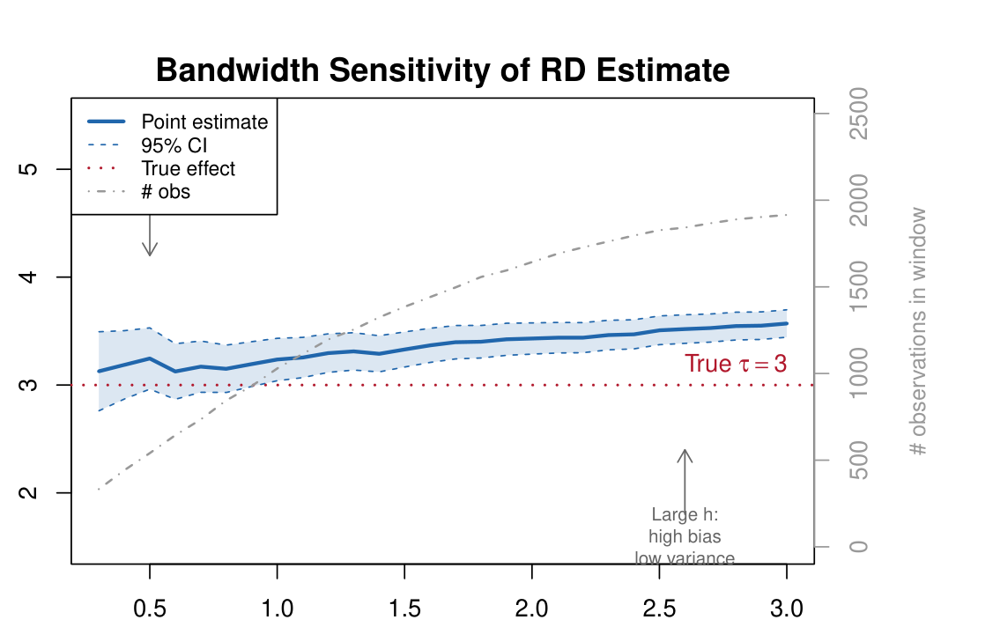
3.14 RDD에서의 공변량 (Covariates in RDD)
RDD에서 공변량의 지위는 백도어 조정에서와 근본적으로 다릅니다.
- 공변량은 식별에 필요하지 않습니다(not needed for identification).
- 백도어 조정과 달리, 교란 변수를 통제할 필요가 없습니다.
- 식별 제약을 제공하는 것은 오직 컷오프에서의 연속성 가정입니다.
- 그러나 공변량을 포함하면 정밀도(precision)를 높일 수 있습니다.
\[ Y_i = \alpha + \beta(Z_i - c) + \tau X_i + \gamma(Z_i - c)X_i + \boldsymbol{\delta}' \mathbf{V}_i + \varepsilon_i \]
여기서 \(\mathbf{V}_i\)는 사전 처치 공변량 벡터입니다. 결과의 잔차 분산을 줄여 \(\hat{\tau}\)의 표준오차를 낮추는 역할을 합니다.
- 공변량은 진단 도구로도 쓰입니다.
- \(\mathbf{V}_i\)가 컷오프에서 점프한다면 이는 RDD 타당성에 반하는 증거입니다 (§2.2, §2.6).
같은 공변량이 매칭·IPW에서는 식별의 필수 조건이었지만, RDD에서는 효율성 개선 수단이자 진단 도구로 격하됩니다. 공변량을 넣고 빼는 것이 추정치를 크게 바꾼다면, 그것은 정밀도가 좋아진 것이 아니라 설계가 흔들린다는 신호로 읽어야 합니다.
3.15 소프트웨어: rdrobust
rdrobust(Calonico, Cattaneo, Titiunik)는 RDD 분석의 표준 R/Stata 패키지입니다.- 구현하고 있는 기능:
- MSE-최적 및 CE-최적 대역폭 선택 (기본값은 강건 편향 보정과 결합한 CE-최적)
- 강건 편향 보정(RBC) 신뢰구간
- 공변량 조정, 군집(clustering), Fuzzy RD
library(rdrobust)
rd <- rdrobust(Y, Z, c = 1500)
summary(rd)4. Fuzzy RD
4.1 개념 (Concept)
- Sharp RD 에서는 컷오프를 넘는 순간 처치가 결정론적으로 전환됩니다: \(X_i = \mathbf{1}\{Z_i \ge c\}\).
- Fuzzy RD 에서는 컷오프를 넘는 것이 처치 확률만 바꿉니다.
\[ \lim_{z \downarrow c} P[X_i = 1 \mid Z_i = z] \;\neq\; \lim_{z \uparrow c} P[X_i = 1 \mid Z_i = z] \]
다만 이 점프는 0에서 1로의 이동이 아닙니다. §1.9의 아래쪽 그래프가 정확히 이 상황을 그린 것입니다.
4.2 왜 발생하는가 (Why Does It Arise?)
Fuzzy가 생기는 이유는 대체로 제도의 운영 방식에 있습니다.
- 면제 및 재량적 집행(exemptions and discretionary enforcement)
- 컷오프 규칙에 대한 불완전한 순응(imperfect compliance)
- 행정 오류(administrative errors)
구체적 예시는 다음과 같습니다.
- 시험 점수 컷오프가 여름학교 자격을 결정하지만, 자격을 갖춘 학생이 모두 실제로 참여하지는 않습니다.
- 연령 기반 프로그램 자격이 있지만, 일부는 일찍 혹은 늦게 신청합니다.
실무에서는 현실의 많은 RD 상황이 sharp가 아니라 fuzzy 입니다.
4.3 IV로서의 Fuzzy RD: Wald 추정량 (Fuzzy RD as IV: The Wald Estimator)
여기서 IV 강의의 구조가 그대로 돌아옵니다.
- \(W_i = \mathbf{1}\{Z_i \ge c\}\)를 실제 처치 \(X_i\)에 대한 도구변수로 정의합니다. (IV 강의의 \(Z_i\)가 하던 역할입니다.)
- 컷오프를 넘는 사건은 일종의 “자연실험” 을 만듭니다. \(c\) 근방에서 \(W_i\)는 무작위 배정에 가깝습니다.
- 잠재 결과의 연속성 하에서 Fuzzy RD 추정량(estimand) 은 다음과 같습니다.
\[ \tau_{FRD} = \frac{\lim_{z \downarrow c} E[Y_i \mid Z_i = z] - \lim_{z \uparrow c} E[Y_i \mid Z_i = z]}{\lim_{z \downarrow c} E[X_i \mid Z_i = z] - \lim_{z \uparrow c} E[X_i \mid Z_i = z]} = \frac{Y \text{에 대한 ITT 효과}}{X \text{에 대한 1단계 효과}} \]
- 분자는 Sharp RD에서 구했던 결과 변수의 점프, 즉 의도된 처치 효과(ITT) 입니다.
- 분모는 처치 확률의 점프(1단계 효과) 입니다.
- 구조적으로 이것은 IV 강의의 Wald 추정량 / LATE 와 완전히 동일하며, 다만 그것을 컷오프 근방에 국소적으로 적용한 것입니다. Sharp RD는 분모가 정확히 1인 특수한 경우로 읽을 수 있습니다.
4.4 가정 (Assumptions)
- 연속성(Continuity): 잠재 결과의 CEF \(E[Y_i(x) \mid Z_i = z]\) 와 \(E[X_i(w) \mid Z_i = z]\) 가 \(c\)에서 연속입니다.
- 1단계(First stage): \(\lim_{z \downarrow c} E[X_i \mid Z_i = z] - \lim_{z \uparrow c} E[X_i \mid Z_i = z] \neq 0\), 즉 처치 확률이 컷오프에서 실제로 점프합니다.
- 단조성(Monotonicity): \(c\)를 넘는 것이 어떤 개체의 처치 확률을 낮추지는 않습니다. IV/LATE의 “반항자 없음(no defiers)” 가정에 대응합니다.
- 이 세 가정은 IV 강의의 관련성(relevance)·배제(exclusion)·단조성을 국소 RD 상황으로 옮긴 것입니다.
- 배제 제약은 설계에 내장되어 있습니다. 컷오프 근방의 순응자(complier)에게 \(W_i\)는 오직 \(X_i\)를 통해서만 \(Y_i\)에 영향을 줍니다. 컷오프 자체가 결과에 직접 영향을 주는 다른 경로를 만들지 않는 한 그렇습니다.
4.5 해석과 한계 (Interpretation and Limitations)
\(\tau_{FRD}\)는 컷오프에 있는 순응자에 대한 LATE 입니다.
\[ \tau_{FRD} = E[Y_i(1) - Y_i(0) \mid \text{complier}, Z_i = c] \]
이 효과가 적용되는 대상은 두 겹으로 제한됩니다.
- 순응자(Compliers): 컷오프를 넘는 것이 실제로 처치 상태를 바꾸는 개체들
- 컷오프에서: \(Z_i\)가 \(c\) 근방인 개체들
IV의 LATE가 이미 순응자에 국한된 효과였는데, Fuzzy RD는 거기에 “컷오프 근방”이라는 제약이 하나 더 붙습니다.
- 이는 외적 타당성(external validity) 을 제한하지만, 설계의 내적 타당성(internal validity) 은 매우 강합니다.
- 실무적으로는 이 한계가 치명적이지 않은 경우가 많습니다. 중요한 정책 질문들이 자연스럽게 fuzzy RD 상황을 만들어 내기 때문입니다. 자격 규칙이 컷오프를 만들지만 순응은 불완전한 것이 정책 현장의 일반적 모습입니다.
5. 사례 연구: 보충 교육 (Case Study: Remedial Education)
5.1 배경과 연구 질문
- 1996년, 시카고 공립학교(Chicago Public Schools, CPS)는 “사회적 진급(social promotion)” 을 폐지하고, 다음 학년으로 올라가려면 최소 시험 점수를 충족하도록 요구했습니다.
- 컷오프 미만의 학생은 여름학교(summer school) 참여가 의무화되었고, 유급(grade retention) 에 처할 수 있었습니다.
- 컷오프: Iowa Test of Basic Skills(ITBS)의 읽기·수학 점수
- 예: 3학년은 두 과목 모두에서 2.8 GE(학년 등가 점수)를 넘어야 진급
여름학교와 유급이 학생의 학업 성취에 미치는 인과효과는 무엇인가? (Jacob & Lefgren, 2004, Rev. Econ. Stat.)
5.2 연구 설계: Fuzzy RDD
- 처치: 여름학교와 유급
- Fuzzy RDD인 이유: 모든 학생이 컷오프 규칙을 엄격히 따르지는 않습니다. 컷오프 위인데 유급되는 학생도, 아래인데 유급되지 않는 학생도 있습니다.
- 면제와 재량적 집행이 fuzziness를 만듭니다.
- 그럼에도 컷오프 점수에서 처치 확률에는 크고 불연속적인 점프가 존재합니다.
- 이 불연속이 컷오프에서의 LATE 를 식별하게 해 줍니다.
- 자료: CPS의 행정 기록 (1993–1999), 3학년과 6학년 약 350,000명
- 결과 변수: ITBS 읽기·수학 점수의 변화(로짓 척도), 1년 후와 2년 후 시점에서 평가
5.3 이 연구에서의 IV 추정
\(W_i = \mathbf{1}\{\text{Score}_i \ge \text{cutoff}\}\) 를 도구변수로 둡니다.
1단계 (처치 모형):
\[ \text{Treat}_i = \pi_0 + \pi_1 W_i + \pi_2 \text{Score}_i + \pi_3 (W_i \cdot \text{Score}_i) + \eta_i \]
2단계 (결과 모형):
\[ Y_i = \beta_0 + \rho \cdot \widehat{\text{Treat}}_i + \beta_1 \text{Score}_i + \beta_2 (W_i \cdot \text{Score}_i) + \varepsilon_i \]
여기서 \(\rho\)가 컷오프 근방에서의 처치 인과효과(LATE)입니다.
- 관련성(Relevance): 컷오프가 처치를 강하게 예측합니다(1단계 점프).
- 외생성(Exogeneity): 임계값 근방에서 컷오프 바로 위인지 아래인지는 사실상 무작위입니다.
두 식 모두에 \(\text{Score}_i\)와 \(W_i \cdot \text{Score}_i\)가 들어가 있다는 점에 주목합니다. §3.7의 단일 회귀와 같은 구조로, 컷오프 좌우에서 서로 다른 기울기를 허용하는 국소 선형 회귀를 IV 틀 안에서 수행하는 것입니다.
5.4 결과: 순효과 (Net Effects)
- 순효과 (여름학교 + 유급):
- 3학년: 첫해 순효과가 약 0.11–0.13 로짓 (한 해 통상 학습량의 약 20%에 해당). 2년 후에도 일부 감소(fade-out)를 동반하며 효과가 지속됩니다.
- 6학년: 읽기에서 의미 있는 효과 없음, 수학에서는 작은 양(+)의 효과이나 통계적으로 유의하지 않습니다.
- 유급 단독:
- 3학년: 읽기와 수학 모두에서 단기적 향상
- 6학년: 읽기에서 음(−)의 효과, 수학에서는 미미
- 여름학교 단독:
- 3학년 학생에게 긍정적이며, 특히 저성취 학생에게 효과가 큽니다.
5.5 시각화된 결과 (Visualized Result)
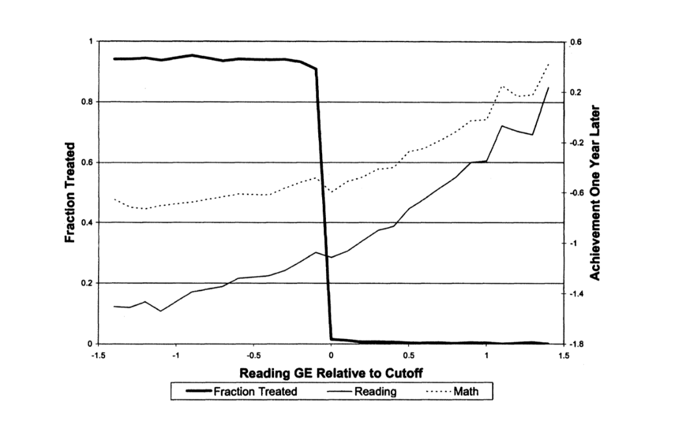
5.6 강점과 한계 (Strengths and Limitations)
강점
- 정책 컷오프를 통한 자연실험
- Fuzzy RDD + IV 결합으로 인과추론이 가능
- 학년·성별·사회경제적 지위별 하위집단 이질성 분석
한계
- LATE에 국한: 컷오프 근방의 순응자에게만 적용됩니다.
- 장기(3년 이상) 성과에 대한 증거가 없습니다.
- 데이터 기반 최적 대역폭을 사용하지 않았습니다. 형식적인 MSE-최적 또는 CE-최적 선택 없이 수동으로 대역폭을 고른 것이 추정 정밀도에 영향을 줄 수 있습니다.
이 사례는 fuzzy RD의 위력과 함께, 현대적 대역폭 방법론의 중요성을 동시에 보여 줍니다.
6. 부록 (Appendix)
6.1 Kink RD
마지막으로, RDD의 변형인 Kink RD 를 소개합니다.
Sharp Kink RD: 수준(levels)이 아니라 1차 도함수(first derivatives) 에서의 불연속을 다룹니다.
- 즉, 결과 변수의 수준이 점프하는지가 아니라, 기울기(slope)가 임계값에서 변하는지를 살핍니다. 구체적으로는 \(E[Y_i \mid Z_i = z]\)의 기울기가 임계점에서 변하는지를 봅니다.
- Card, Lee, Pei, and Weber (2015, Econometrica) 가 이 틀을 형식화하였으며, 기울기의 차이(difference in slope) 에 초점을 둡니다.
- 추정 방법은 Sharp RD와 유사하지만, 도함수를 다루므로 국소 이차 회귀(LQR)를 사용하는 것이 더 낫습니다.
Kink RD는 정책 변수의 한계 변화(예: 급여 수준에 따른 한계 세율의 변화)가 결과에 미치는 효과를 식별할 때 특히 유용합니다.
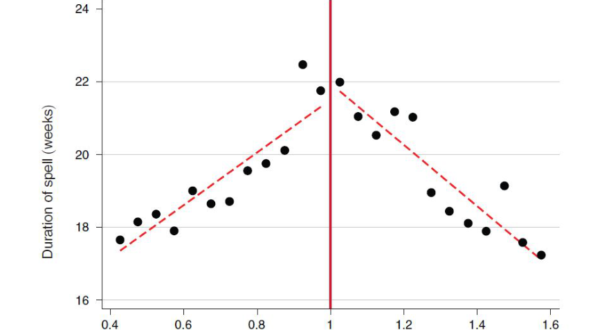
6.2 MSE-최적 대역폭을 위한 가정
§3.9의 \(h_{\mathrm{MSE}}\) 공식이 성립하기 위해 Imbens & Kalyanaraman (2012)이 두는 가정입니다.
- 독립동일분포(i.i.d.): \(\{Y_i, Z_i\}\)가 i.i.d.입니다.
- 매끄러움(Smoothness): 밀도 \(f(z)\)가 연속이고 \(f(c) > 0\) 입니다.
- 조건부 평균(Conditional Mean): \(\mu(z)\)가 \(c\) 근방에서 3회 미분 가능합니다.
- 커널(Kernel): \(K(\cdot)\)가 대칭이고, 유계이며, 컴팩트 지지집합을 갖습니다.
- 조건부 분산(Conditional Variance): \(\sigma^2(z)\)가 \(c\) 근방에서 연속이고 \(\sigma^2(c) > 0\) 입니다.
가정 2의 \(f(c) > 0\) 과 가정 5의 \(\sigma^2(c) > 0\) 은 컷오프 근방에 실제로 데이터가 존재하고 변동이 있어야 한다는, 실질적으로 중요한 요구입니다.
6.3 RD 대역폭에서 왜 정규화가 필요한가
- 최적 대역폭 공식은 분모에 곡률 차이 \((\mu''_{+} - \mu''_{-})^2\) 를 가지고 있습니다.
- 위험: 곡률이 0에 가깝게 추정되면 대역폭 \(h\)가 무한대로 발산합니다.
- 참 곡률이 작은 것이 아니라 추정 오차로 작게 나온 경우에도 같은 일이 벌어지므로, 이는 실제로 자주 발생하는 문제입니다.
IK (2012)의 해법은 분모에 벌점항 \(\hat{r}\)(곡률 추정치의 분산)을 더하는 것입니다.
\[ \hat{h}_{\mathrm{reg}} \propto \left( \frac{\text{분산의 합}}{f(c) \cdot [(\text{곡률})^2 + \text{정규화항}]} \right)^{1/5} \]
이렇게 하면 “평평한” 데이터에서도 안정적이고 유한한 대역폭이 보장됩니다.
6.4 정규화의 구현
- \(\hat{\mu}^{(2)}_{+}(c), \hat{\mu}^{(2)}_{-}(c)\) 를 국소 이차 회귀로 추정합니다.
- 정규화 항은 다음과 같이 계산합니다.
\[ \hat{r}_{+} = \frac{2160 \cdot \hat{\sigma}^2_{+}(c)}{N_{h,+} \cdot h^4}, \qquad \hat{r}_{-} = \frac{2160 \cdot \hat{\sigma}^2_{-}(c)}{N_{h,-} \cdot h^4} \]
- 벌점은 데이터가 적을수록(\(N_h\)가 작을수록), 잡음이 클수록(\(\sigma^2\)이 클수록) 커집니다. 곡률 추정이 믿을 만하지 않은 상황일수록 더 강하게 개입한다는 뜻입니다.
6.5 왜 국소 선형인가? 다항식 차수의 역할
- RD 추정은 컷오프 근방에서 차수 \(p\)의 국소 다항 회귀(local polynomial regression) 를 사용합니다.
- \(p\)를 높이면 편향은 줄지만(CEF를 더 잘 근사) 분산이 커집니다(컷오프 근방의 제한된 데이터로 더 많은 모수를 추정해야 하므로).
- 이론적으로는 높은 \(p\)가 더 빠른 수렴 속도를 주지만, 실제 유한 표본에서는 분산 비용이 지배적입니다.
이 때문에 학계는 다음과 같은 역할 분담으로 수렴했습니다.
| 차수 | 용도 |
|---|---|
| 국소 선형 (\(p=1\)) | 주 처치효과 추정 — 경계에서 편향-분산 균형이 좋음 |
| 국소 이차 (\(p=2\)) | 편향 추정 — MSE-최적 대역폭(IK, 2012)과 강건 편향 보정(CCT, 2014) |
- 이 “\(p\)로 추정하고 \(p+1\)로 편향을 보정한다” 는 전략이
rdrobust의 기본 동작입니다.
6.6 전역 다항식: 경계의 사례 (Global Polynomials: A Cautionary Tale)
- 예전에는 러닝 변수의 전 구간에 걸쳐 고차 전역 다항식(3차, 4차 등)을 적합하는 관행이 있었습니다. §1.4에서 본 Lee et al. (2004) 그림의 4차 회귀선이 그 예입니다.
- Gelman & Imbens (2019, JBES)는 이것이 문제적임을 보였습니다.
- 추정치가 컷오프에서 멀리 떨어진 관측치에 민감해집니다.
- 고차 다항식은 격렬한 진동(Runge 현상) 을 만들 수 있습니다.
- 신뢰구간의 포함률이 나쁩니다.
국소 다항식(컷오프의 대역폭 \(h\) 안에서만 적합)은 이런 문제를 겪지 않습니다. 오직 컷오프 근방의 데이터만 사용하기 때문입니다. 문제는 다항식의 차수 자체가 아니라, 그것을 전 구간에 걸쳐 적합한다는 데 있었습니다.
현대의 모범 사례는 전역 다항식 적합이 아니라, 데이터 기반 대역폭을 사용한 국소 선형 추정입니다.
정리하며 (Closing Remarks)
이번 강의의 논증 사슬을 단계별로 압축하면 다음과 같습니다.
| 단계 | 내용 | 근거 |
|---|---|---|
| ① 문제 제기 | 처치가 컷오프 규칙으로 결정되면 위치추정성이 정의상 깨져 백도어·IPW를 쓸 수 없다 | \(P[X=1 \mid Z=c-\varepsilon]=0\), \(P[X=1 \mid Z=c+\varepsilon]=1\) |
| ② 가정 교체 | 조정 대신 잠재 결과 CEF의 연속성을 가정한다 | Continuity Assumption |
| ③ 식별 | 연속성 + SRD + 일치성 → 처치효과는 컷오프에서의 좌·우 극한 차이 | \(\tau_{SRD} = \lim_{z \downarrow c} E[Y|Z=z] - \lim_{z \uparrow c} E[Y|Z=z]\) |
| ④ 타당성 검증 | 연속성은 검증 불가능하지만, 깨진 징후는 관찰 가능하다 — 공변량 균형, McCrary 밀도 검정, 번칭, 플라세보 검정 | §2 |
| ⑤ 추정 | 한 점·경계점 추정이라는 난점 → 국소 선형 회귀 + 커널 가중 단일 회귀 | \(\hat{\tau}_{SRD} = \hat{\alpha}^{+} - \hat{\alpha}^{-}\) |
| ⑥ 대역폭 | 편향 \(\propto h^2 \cdot\) 곡률차, 분산 \(\propto 1/(Nh)\) → MSE-최적(\(N^{-1/5}\))은 점추정용, CE-최적(\(N^{-1/4}\))은 추론용 | IK (2012), CCT (2014), CCF (2020) |
| ⑦ 확장 | 순응이 불완전하면 컷오프 지시변수를 도구로 쓰는 Wald 추정량 → 순응자에 대한 국소 LATE | \(\tau_{FRD} = \text{ITT} / \text{1단계}\) |
| ⑧ 실증 | 시카고 보충 교육 사례: 3학년에는 양(+)의 효과, 6학년에는 효과 거의 없음 | Jacob & Lefgren (2004) |
개인적인 감상 몇 가지를 덧붙입니다.
가장 인상적인 지점은 “위치추정성을 포기하는 대신 연속성을 얻는다”는 교환입니다. 지금까지의 방법들은 모두 위치추정성을 사수하려 애썼습니다. 매칭은 공통 지지역을 잘라 냈고, IPW는 극단 가중치를 절단했습니다. RDD는 정반대로 위치추정성이 가장 극단적으로 깨진 상황을 오히려 설계의 출발점으로 삼습니다. 컷오프가 처치를 완벽히 결정한다는 사실이 문제가 아니라 자산이 되는 것입니다. 가정을 지키려 애쓰는 대신 다른 가정으로 갈아타는 이 발상의 전환이 RDD의 본질이라고 생각합니다.
진단 도구의 성격도 곱씹을 만합니다. 연속성 가정은 검증할 수 없습니다. 그런데 §2의 도구들은 가정을 증명하는 것이 아니라 가정이 깨졌다면 남았을 흔적을 찾습니다. 밀도가 점프했는가, 공변량이 점프했는가, 가짜 컷오프에서도 효과가 나오는가. 이는 반증 가능성을 설계에 심어 넣는 방식이며, “검증 불가능한 가정을 어떻게 다룰 것인가”에 대한 하나의 모범 답안으로 읽힙니다.
점추정과 추론의 목적함수가 다르다는 §3.11–3.12의 논의는 실무적으로 가장 값진 부분이었습니다. MSE-최적 대역폭이 “최적”인데도 95% 신뢰구간이 실제로는 80%밖에 포함하지 못한다는 사실은 직관에 반합니다. 최적화의 목적함수를 명시하지 않은 채 “최적”이라는 말을 쓰는 것이 얼마나 위험한지 보여 주는 사례이며, 이 구분을 모르면
rdrobust의 기본값이 왜 CE-최적인지도 이해할 수 없습니다.실용적 한계도 분명합니다. RDD가 주는 것은 어디까지나 컷오프에서의 효과이고, Fuzzy RD라면 거기에 순응자에게만이라는 제약이 하나 더 붙습니다. 시험 점수 1500점 근방 학생에게 장학금이 미친 효과를 알아냈다고 해서, 그것이 1200점 학생에게도 통한다고 말할 수 없습니다. 내적 타당성을 극한까지 밀어붙인 대가로 외적 타당성을 상당 부분 내주는 거래이며, 정책 논의에서 RD 결과를 인용할 때 가장 자주 잊히는 지점이기도 합니다.
마지막으로 §6.6의 전역 다항식에 대한 경고는 방법론의 자기 교정 과정을 잘 보여 줍니다. §1.4에서 본 Lee et al. (2004)의 유명한 그림이 바로 4차 전역 다항식이었는데, 15년 뒤 Gelman & Imbens (2019)가 그 관행 자체를 문제 삼았습니다. 고전적 사례로 배운 그림이 현재 기준으로는 권장되지 않는 방식으로 그려졌다는 사실은, 방법론을 배울 때 결과와 절차를 분리해서 보아야 한다는 점을 새삼 일깨워 줍니다.